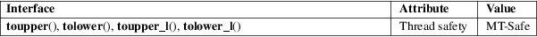

toupper, tolower, toupper_l, tolower_l − convert uppercase or lowercase
Standard C library (libc, −lc)
#include <ctype.h>
int
toupper(int c);
int tolower(int c);
int
toupper_l(int c, locale_t
locale);
int tolower_l(int c, locale_t
locale);
Feature Test Macro Requirements for glibc (see feature_test_macros(7)):
toupper_l(),
tolower_l():
Since glibc 2.10:
_XOPEN_SOURCE >= 700
Before glibc 2.10:
_GNU_SOURCE
These functions convert lowercase letters to uppercase, and vice versa.
If c is a lowercase letter, toupper() returns its uppercase equivalent, if an uppercase representation exists in the current locale. Otherwise, it returns c. The toupper_l() function performs the same task, but uses the locale referred to by the locale handle locale.
If c is an uppercase letter, tolower() returns its lowercase equivalent, if a lowercase representation exists in the current locale. Otherwise, it returns c. The tolower_l() function performs the same task, but uses the locale referred to by the locale handle locale.
If c is neither an unsigned char value nor EOF, the behavior of these functions is undefined.
The behavior of toupper_l() and tolower_l() is undefined if locale is the special locale object LC_GLOBAL_LOCALE (see duplocale(3)) or is not a valid locale object handle.
The value returned is that of the converted letter, or c if the conversion was not possible.
For an explanation of the terms used in this section, see attributes(7).

toupper()
tolower()
C11, POSIX.1-2008.
toupper_l()
tolower_l()
POSIX.1-2008.
toupper()
tolower()
C89, 4.3BSD, POSIX.1-2001.
toupper_l()
tolower_l()
POSIX.1-2008.
The standards require that the argument c for these functions is either EOF or a value that is representable in the type unsigned char. If the argument c is of type char, it must be cast to unsigned char, as in the following example:
char c;
...
res = toupper((unsigned char) c);
This is necessary because char may be the equivalent signed char, in which case a byte where the top bit is set would be sign extended when converting to int, yielding a value that is outside the range of unsigned char.
The details of what constitutes an uppercase or lowercase letter depend on the locale. For example, the default "C" locale does not know about umlauts, so no conversion is done for them.
In some non-English locales, there are lowercase letters with no corresponding uppercase equivalent; the German sharp s is one example.
isalpha(3), newlocale(3), setlocale(3), towlower(3), towupper(3), uselocale(3), locale(7)